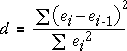

Independence of the errors
Although we have not stressed it earlier, an important assumption in the normal linear model is that the different errors are uncorrelated with each other. Occasionally some individuals are 'close' in a way that means an 'unusually' high response measurement will be associated with unusually high measurements in nearby individuals -- their errors are correlated.
For example, in an experiment in a greenhouse, adjacent plants will be grown in similar conditions (light, moisture, air flow) so an unusually high growth rate for one plant may be associated with environmental conditions that also cause unusually high growth rates in adjacent plants.
| Good experimental design tries to ensure that all experimental units are similar, but correlation between 'adjacent' errors is sometimes unavoidable. |
Correlated errors and time series
Correlated errors are most common when the observations are made sequentially in time. There are often influences on the response that are not explicitly recorded or modelled but that change gradually over time resulting in successive errors being correlated. This is called serial correlation.
Serial correlation is especially common when modelling time series — i.e. when we are using a normal linear model with time as the explanatory variable.
Assessing serial correlation
Strong serial correlation may be visible in a plot of residuals against time, but it is often difficult to assess whether the pattern could have arisen by chance. A test statistic called the Durbin-Watson statistic is often used to assess whether there is serial correlation. Writing the successive residuals as e1, e2, ..., en, this statistc is defined as:

When the serial correlation is high, successive residuals will be similar, their differences will be small and the test statistic will be close to zero.
The p-value for the test based on the Durbin-Watson statistic is the probability of getting such a low value of d when there is no serial correlation. An approximate p-value can be obtained from special statistical tables, but it can also be determined with a simulation, as described in the example below.
World rice production
The time series below shows the total world rice production (million tonnes) between 1961 and 2001.
The scatterplot on the left shows the data and a least squares line. The residuals on the right do not indicate any problems with curvature or non-constant variance.
To assess whether there is serial correlation in the errors, the Durbin-Watson statistic has been evaluated. Is a value of 1.291 indicative of serial correlation?
Select Random Normal Data from the pop-up menu. This shows a randomly generated data set from a linear model with β0, β1 and σ the same as the least squares estimates from the actual time series.
Click Accumulate, then click Simulate about 100 times to build up the sampling distribution of the Durbin-Watson statistic. You should see that a value as low as 1.291 is very unlikely for data like this from a normal linear model, so there is strong evidence that successive errors are correlated.
| There is strong evidence that years with unusually high (or low) yield tend to follow each other. |
Warning
If a linear model is used for a time series, but the relationship is actually nonlinear, successive residuals also tend to be similar and the Durbin-Watson statistic will also be small.
| An unusually small Durbin-Watson statistic can be caused by either serial correlation or nonlinearity. |
The test only suggests serial correlation if you are sure that the data are linear.